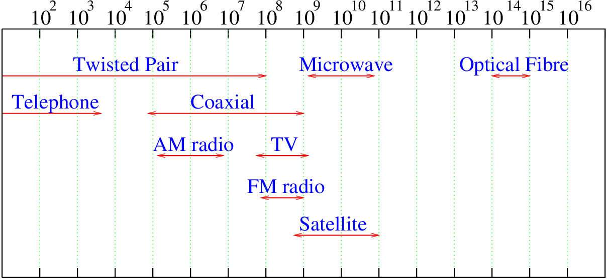
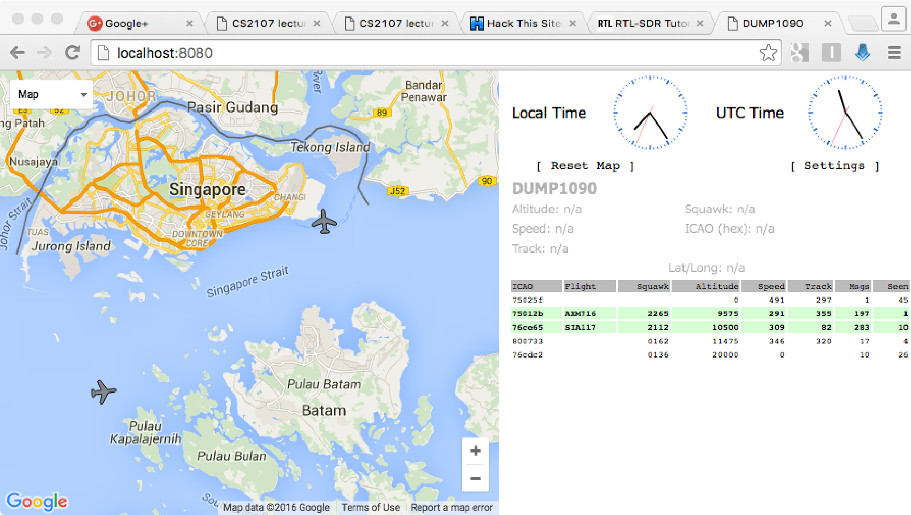
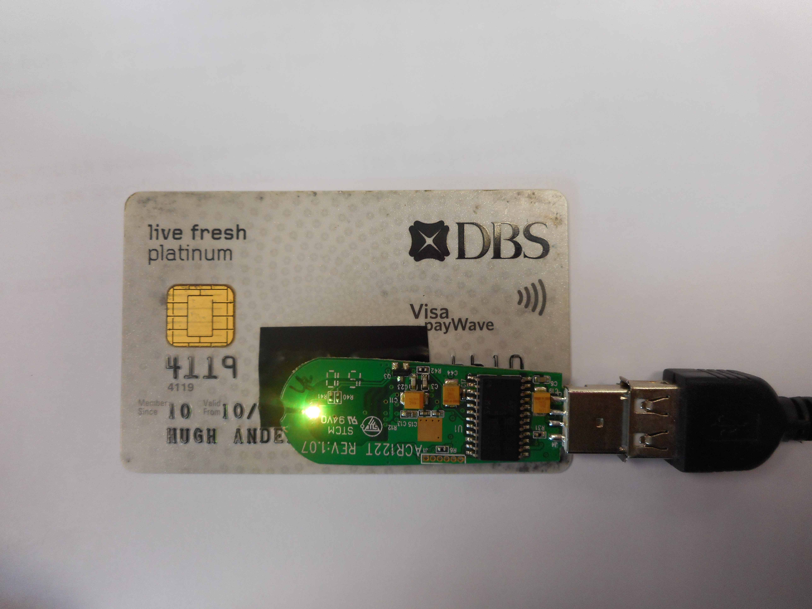
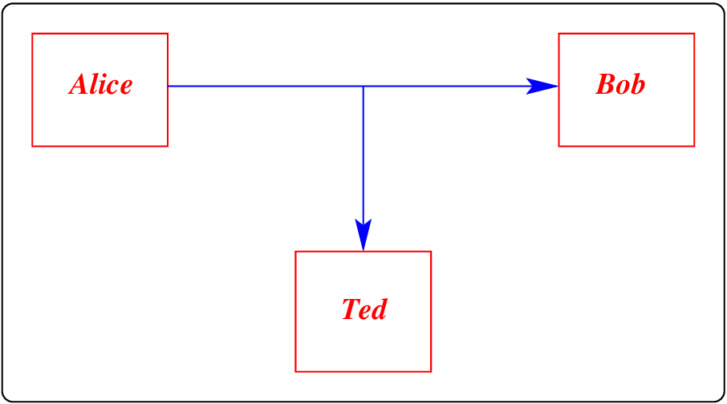
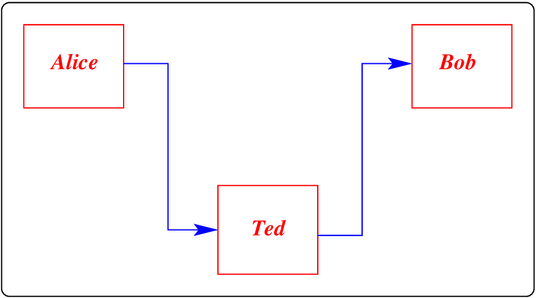
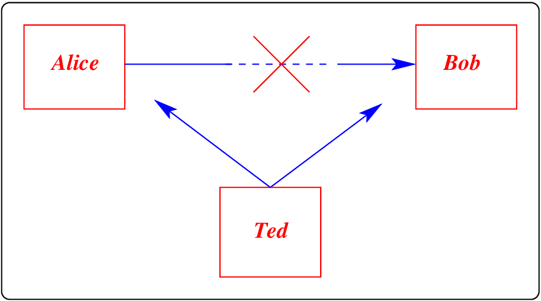
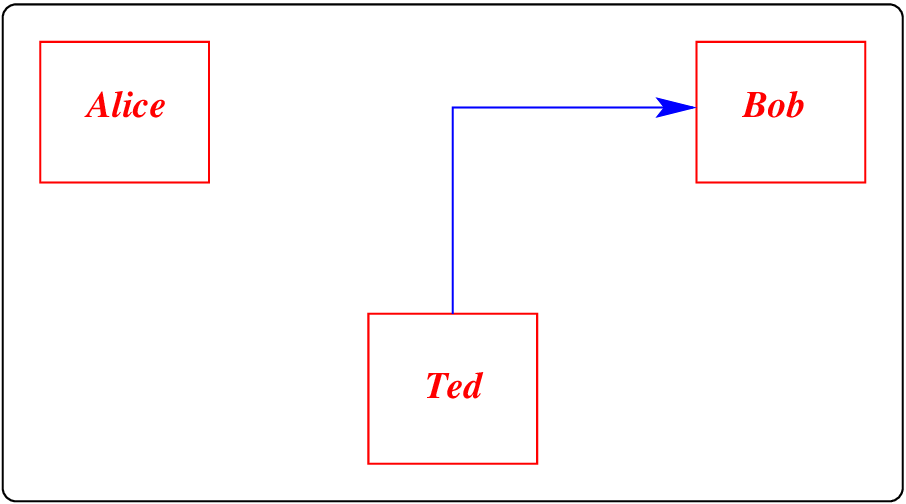
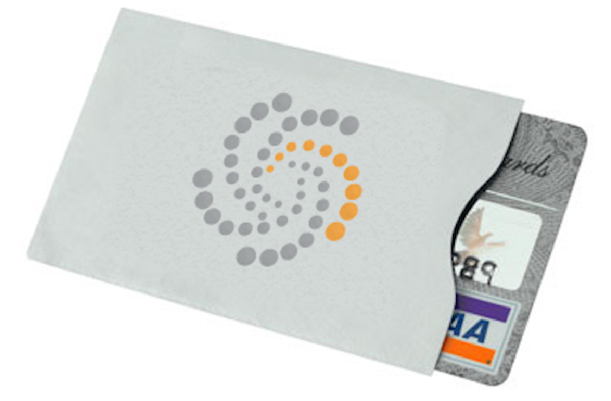

Intro
Consider all the different types of computer-to-computer communication that are commonly used. For example:
-
Internet/IP networks via wire: perhaps at home your PC is attached to a local router using a UTP cable, and your router connects to the ISP using cable or optical fibre.
-
Internet/IP networks via wireless: perhaps you have a wifi network attaching your PC to a local router, or maybe you use bluetooth to access your phone’s Internet/IP access.
-
Your phones: Phones use radio transmissions using the GSM protocols, for both talking, and network access.
-
Wider radio links: All around us people are using HF and VHF radio transceivers to send and receive digital data. For example, it is common to use such links to access remote sites (such as dams, or water treatment plants) where there may not be wired phone or Internet access.
-
GPS transmissions: The global positioning system involves a large number of satellites, transmitting synchronized data, picked up by GPS receivers, perhaps in your phone. The GPS receiver circuitry compares the arrival times of the transmissions to work out your location.
-
LEO trackers: To track wild animals, or containers, sometimes we use low earth orbit satellites. A tiny transmitter sends a very small amount of data up to a satellite, allowing tracking within about 500m or so.
-
Airplane transmissions: All commercial flights transmit flight location information. A technique using an ADS-B (Automatic Dependent Surveillance-Broadcast) Mode-S transponder, which periodically broadcasts location and altitude information to air traffic controllers.
-
NFC: When you tap a card on a reader...
Mostly we just accept all this instant communication, without questioning how it comes about, or how it happens. It is not magic. In most cases these transmissions are just using standard, well defined frequencies and signals. We can use radio receivers to listen in on many of these signals:

We can use an SDR (software defined radio) to listen to a wide range of signals. The receive-only SDR on the left, below, can be bought for as little as $10. The SDR on the right costs a lot more, but can both receive and transmit.
 or
or

Lets start with ADS-B, which is a radio transmission at 1090 MHz (\(1.09*10^{9}\) Hz). Our experimental setup consists of an SDR, and software (in this case dump1090) to control the SDR, and display the correctly decoded signals:

It is clear that this is not magic. Radio signals all around us are supplying us with interesting information.
Here is another example, where we use an NFC (Near Field Communication) device to discover information about a nearby, and not so nearby, NFC-enabled card. We do this exercise in class:


Again it is clear that this is not magic. A pair of wire loops can be used to transfer the wireless (radio) information from one location to another.
Nothing can go wrong. go wrng. go wrng.
What if someone messed with some of these signals? What could go wrong? There are plenty of examples where this has happened.
For example - NFC sniffing can be done at a distance of about 10cm, and so we should all be careful with our cards:
HF (High Frequency) radios, attached to simple systems called SCADA systems, are often found managing public utilities, water, sewage and so on. In Australia, an angry man (now jailed) attacked the Maroochy Shire sewage control system, taking control of 150 sewage pumping stations over a three month period. He released a million litres of raw sewage into the environment, using a computer and a radio . The man, had insider knowledge of how the systems worked, and used this knowledge to connect to, and attack the systems. His motivation was anger at being passed up for a job.
This attack highlights the danger in continuing to use antiquated systems without in-built security. In the US, over 80% of US power facilities are managed in a similar fashion.
Perhaps you should check your own phone location, and see where it thinks it is?
Attacks and defences
Attacks on communication systems are not really any different from other attacks. The diagrams below categorize a range of attacks on comms systems, and are no different from other attacks:




In clockwise order, they are snooping or sniffing, man-in-the-middle, spoofing, and denial-of-service. Often the possibility of these attacks succeeding is ignored or believed to be negligable. Security through obscurity is never a good idea.
Instead, we should evaluate and manage this level of our systems in the same way as we assess and control our computer systems. Assuming we had a system that made use of communication infrastructure, we should: evaluate it’s security, do a risk assessment, ensure we have appropriate controls...
NIST have a developed standard (NIST Special Publication 800-53 ) for security controls for all U.S. federal information systems, and its approach seems relevant to assessing any security issue, including ones like this. It includes a framework for risk management, appropriate control measures to mitigate risk, and guidance on operational, technical, and management issues.
For example, within the framework:
-
Technical issues include access control, audit and accountability, identification and authentication, and system and communication protection.
-
Operational issues include awareness and training, contingency planning, incident response, maintenance and physical protection, and even personnel.
-
Management issues include certification, risk assessment and so on.
In , Abrams and Weiss discuss the Maroochy Shire sewage control system attack, and how the NIST security standard could have been applied. They ask and answer questions about which parts of the standard applied to this incursion and which controls would have been effective in limiting the damage.
For the attack on your card details through the use of a card sniffer, the defence is much simpler. A card sleeve can limit the passage of radio frequency signals - it forms what is called a Faraday cage, and completely stops card sniffing. Of course you need to take your card out of it’s sleeve to use it:

We can see that defences against communication attacks can encompass a wide range of techniques. Unfortunately, there is no magic bullet for defending our communication schemes, except perhaps to reach for end-to-end security, where even a corrupted communication network cannot result in malicious activities. However, even in this scenario, a DoS attack may be possible.